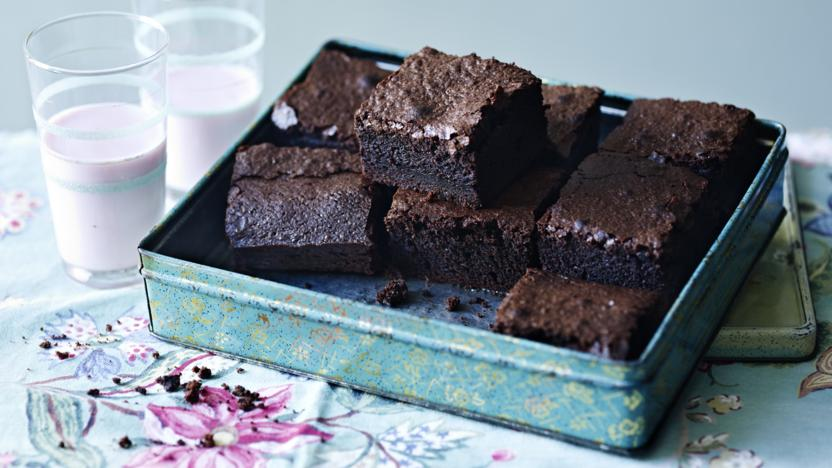

Brownies
Home

Prep Time - 30 mins / Cook Time - 10-30 mins / Serves 6
Description
Rich and indulgent brownies. See the ingredients list and directions to make this below:
Ingredients
- 225g unsalted butter
- 450g caster sugar
- 140g dark chocolate
- 5 medium eggs
- 110g plain flour
- 55g cocoa powder
Step-By-Step Directions
- Heat the oven to 190C/170C Fan/Gas 5. Line a 20x30cm/8x12in baking tin with baking paper.
- Gently melt the butter and the sugar together in a large pan. Once melted, take off the heat and add the chocolate. Stir until melted.
- Beat in the eggs, then stir in the flour and the cocoa powder.
- Pour the brownie batter into the prepared tin and bake for 30–35 minutes, or until the top of the brownie is just firm but there is still a gentle wobble in the middle.
- Take out of the oven and leave to cool in the tin. Cut the brownies into 5cm squares when only just warm, or completely cool.
- Enjoy!